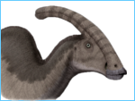

Parasaurolophus is a genus of dinosaur from the Late Cretaceous Period of what is now North America, about 75 million years ago. A member of the Hadrosaurid or duck-billed dinosaurs, it was a plant-eater that walked ontwo legs or all four. Three species are recognized: P. walkeri, P. tubicen, and the short-crested P. cyrtocristatus. Remains are known from Alberta,
(more...)
|